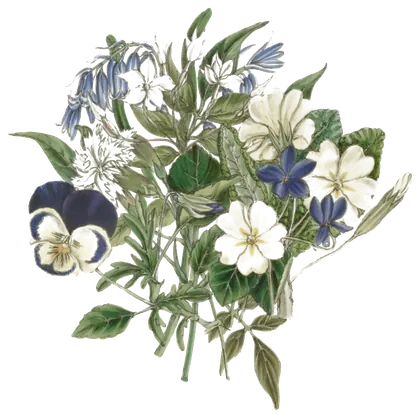
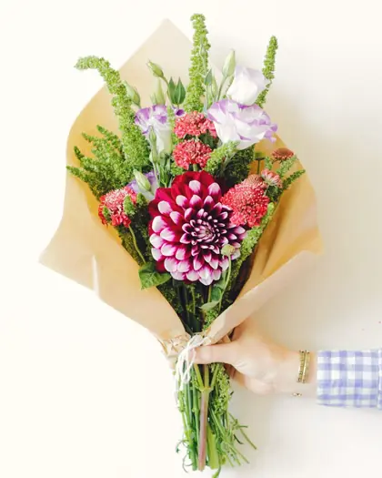
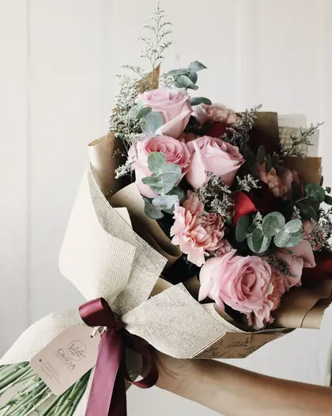
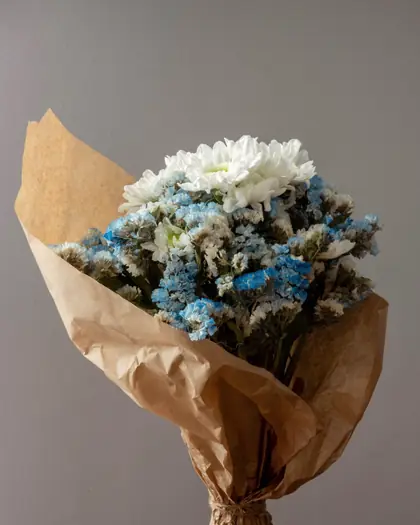
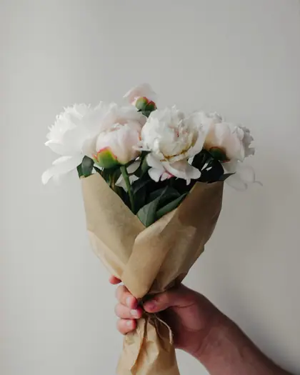
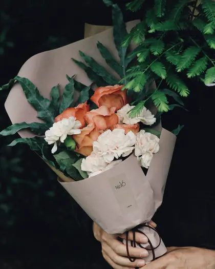
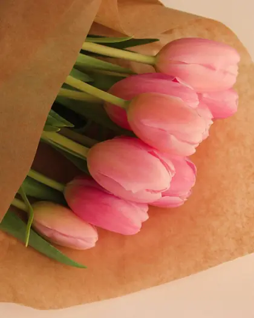
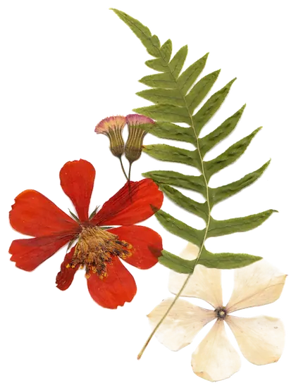

I bouquet
Sei fogli, sei mazzi.
Sfogliali di lato col dito. Ognuno si può cambiare: basta partire da quello che ti somiglia di più.
Prezzi di esempio.

-

Foglio 2
Il Campo
Dalie, margherite e foglie come raccolte in un prato.
Parti da questo Ordinalo subito su WhatsApp -

Foglio 3
Cipria
Rose e peonie nei toni del rosa, con un nastro di raso.
Parti da questo Ordinalo subito su WhatsApp -

Foglio 4
Tramontana
Bianco e azzurro, carta kraft stropicciata, nessun fronzolo.
Parti da questo Ordinalo subito su WhatsApp -

Foglio 5
Bianca
Rose bianche e crema: per chi non vuole sbagliare.
Parti da questo Ordinalo subito su WhatsApp -

Foglio 6
Brace
Arancio caldo su fogliame scuro. Si nota da lontano.
Parti da questo Ordinalo subito su WhatsApp -

Foglio 7
Solo tulipani
Una specie sola, tanti gambi. Il mazzo più sincero.
Parti da questo Ordinalo subito su WhatsApp
1 di 6

Nessuno ti somiglia?
Fallo tu, gambo per gambo. Il prezzo si aggiorna mentre scegli.
Componi il bouquet